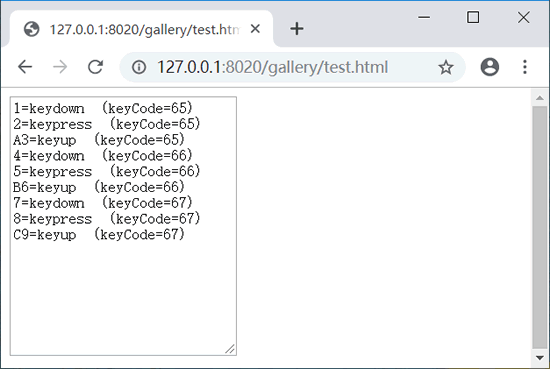
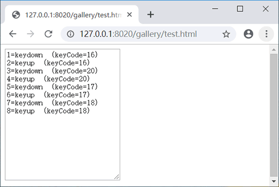
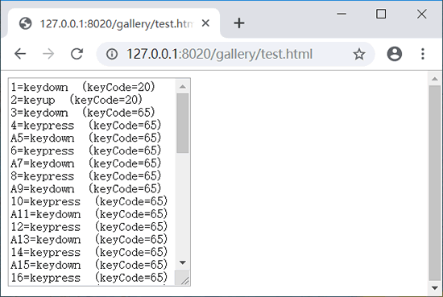
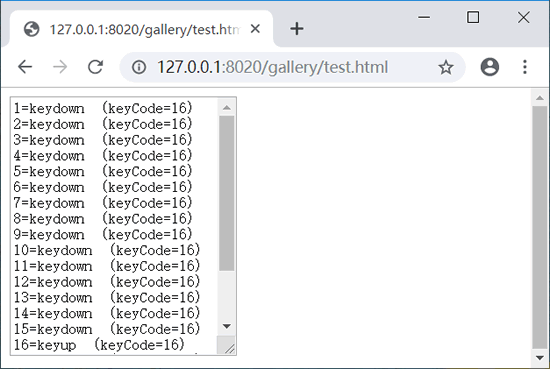

首页 > 编程笔记
JS键盘事件（非常详细）
在 JavaScript 中，当用户操作键盘时，会触发键盘事件，键盘事件主要包括下面 3 种类型：
当获取用户正按下键码时，可以使用 keydown、keypress 和 keyup 事件获取这些信息。其中 keydown 和 keypress 事件基本上是同义事件，它们的表现也完全一致，不过一些浏览器不允许使用 keypress 事件获取按键信息。所有元素都支持键盘事件，但键盘事件多被应用在表单输入中。
keyCode 和 charCode 属性使用比较复杂，但是它们在实际开发中又比较常用，故比较这两个属性在不同事件类型和不同浏览器中的表现时非常必要的，如下表所示。读者可以根据需要有针对性的选用事件响应类型和引用属性值。
某些键的可用性不是很正确，如 PageUp 和 Home 键等。不过常用功能键和字符键都是比较稳定的，如下表所示。
对于字符键来说，键盘事件的响应顺序：keydown → keypress → keyup。
对于非字符键（如功能键或特殊键）来说，键盘事件的相应顺序：keydown → keyup。
如果按下字符键不放，则 keydown 和 keypress 事件将逐个持续发生，直至松开按键。
如果按下非字符键不放，则只有 keydown 事件持续发生，直至松开按键。
当分别输入 A、B、C 时：
当分别输入 Shift、Ctrl、Alt 功能键时：
当连续按下字符 A 时：
当连续按下 Shift 键时：
- keydown：在键盘上按下某个键时触发。如果按住某个键，会不断触发该事件，但是 Opera 浏览器不支持这种连续操作。该事件处理函数返回 false 时，会取消默认的动作（如输入的键盘字符，在 IE 和 Safari 浏览器下还会禁止keypress 事件响应）。
- keypress：按下某个键盘键并释放时触发。如果按住某个键，会不断触发该事件。该事件处理函数返回 false 时，会取消默认的动作（如输入的键盘字符）。
- keyup：释放某个键盘键时触发。该事件仅在松开键盘时触发一次，不是一个持续的响应状态。
当获取用户正按下键码时，可以使用 keydown、keypress 和 keyup 事件获取这些信息。其中 keydown 和 keypress 事件基本上是同义事件，它们的表现也完全一致，不过一些浏览器不允许使用 keypress 事件获取按键信息。所有元素都支持键盘事件，但键盘事件多被应用在表单输入中。
示例
下面示例实时捕获键盘操作的各种细节，即键盘响应事件类型及对应的键值。
<textarea id="key"></textarea>
<script>
var key = document.getElementById("key");
key.onkeydown =f; //注册keydown事件处理函数
key.onkeyup = f; //注册keyup事件处理函数
key.onkeypress = f; //注册keypress事件处理函数
function f (e) {
var e = e || window.event; //标准化事件处理
var s = e.type + " " + e.keyCode; //获取键盘事件类型和按下的值
key.value = s;
}
</script>
键盘事件属性
键盘定义了很多属性，如下表所示。利用这些属性可以精确控制键盘操作。键盘事件属性一般只在键盘相关事件发生时才会存在于事件对象中，但是 ctrlKey 和 shiftKey 属性除外，因为它们可以在水保事件中存在。例如，当按下 Ctrl 或Shift 键时单击鼠标操作。| 属性 | 说明 |
|---|---|
| keyCode | 该属性包含键盘中对应键位的键值 |
| charCode | 该属性包含键盘中对应键位的 Unicode 编码，仅 DOM 支持 |
| target | 发生事件的节点（包含元素），仅 DOM 支持 |
| srcElement | 发生事件的元素，仅 IE 支持 |
| shiftKey | 是否按下 Shift 键，如果按下返回 true，否则为false |
| ctrlKey | 是否按下 Ctrl 键，如果按下返回 true，否则为false |
| altKey | 是否按下 Alt 键，如果按下返回 true，否则为false |
| metaKey | 是否按下 Mtea 键，如果按下返回 true，否则为false，仅 DOM 支持 |
示例1
ctrlKey 和 shiftKey 属性可存在于键盘和鼠标事件中，表示键盘上的 Ctrl 和 Shift 键是否被按住。下面示例能够监测 Ctrl 和 Shift 键是否被同时按下。如果同时按下，且鼠标单击某个页面元素，则会把该元素从页面中删除。
document.onclick = function (e) {
var e = e || window.event; //标准化事件对象
var t = e.target || e.srcElement; //获取发生事件的元素，兼容IE和DOM
if (e.ctrlKey && e.shiftKey) { //如果同时按下Ctrl和Shift键
t.parentNode.removeChild(t); //移出当前元素
}
}
keyCode 和 charCode 属性使用比较复杂，但是它们在实际开发中又比较常用，故比较这两个属性在不同事件类型和不同浏览器中的表现时非常必要的，如下表所示。读者可以根据需要有针对性的选用事件响应类型和引用属性值。
| 属性 | IE 事件模型 | DOM 事件模型 |
|---|---|---|
| keyCode（keypress） | 返回所有字符键的正确值，区分大写状态（65~90）和小写状态（97~122） | 功能键返回正确值，而 Shift、Ctrl、Alt、PrintScreen、ScrollLock 无返回值，其他所有键值都返回 0 |
| keyCode（keydown） | 返回所有键值（除 PrintScreen 键），字母键都以大写状态显示键值（65~90） | 返回所有键值（除 PrintScreen 键），字母键都以大写状态显示键值（65~90） |
| keyCode（keyup） | 返回所有键值（除 PrintScreen 键），字母键都以大写状态显示键值（65~90） | 返回所有键值（除 PrintScreen 键），字母键都以大写状态显示键值（65~90） |
| charCode（keypress） | 不支持该属性 | 返回字符键，区分大写状态（65~90）和小写状态（97~122），Shift、Ctrl、Alt、PrintScreen、ScrollLock 无返回值，其他所有键值都返回 0 |
| charCode（keydown） | 不支持该属性 | 所有键值为 0 |
| charCode（keyup） | 不支持该属性 | 所有键值为 0 |
某些键的可用性不是很正确，如 PageUp 和 Home 键等。不过常用功能键和字符键都是比较稳定的，如下表所示。
| 键位 | 码值 | 键位 | 码值 |
|---|---|---|---|
| 0~9（数字键） | 48~57 | A~Z（字母键） | 65~90 |
| Backspace（退格键） | 8 | Tab（制表键） | 9 |
| Enter（回车键） | 13 | Space（空格键） | 32 |
| Left arrow（左箭头键） | 37 | Top arrow（上箭头键） | 38 |
| Right arrow（右箭头键） | 39 | Down arrow（下箭头键） | 40 |
示例2
下面示例演示了如何使用方向键控制页面元素的移动效果。
<div id="box"></div>
<script>
var box = document.getElementById("box"); // 获取页面元素的引用指针
box.style.position = "absolute"; // 色块绝对定位
box.style.width = "20px"; // 色块宽度
box.style.height = "20px"; // 色块高度
box.style.backgroundColor = "red"; // 色块背景
document.onkeydown = keyDown;
//在Document对象中注册keyDown事件处理函数
function keyDown(event){ // 方向键控制元素移动函数
var event = event || window.event; // 标准化事件对象
switch(event.keyCode){ // 获取当前按下键盘键的编码
case 37 : // 按下左箭头键，向左移动5个像素
box.style.left = box.offsetLeft - 5 + "px";
break;
case 39 : // 按下右箭头键，向右移动5个像素
box.style.left = box.offsetLeft + 5 + "px";
break;
case 38 : // 按下上箭头键，向上移动5个像素
box.style.top = box.offsetTop - 5 + "px";
break;
case 40 : // 按下下箭头键，向下移动5个像素
box.style.top = box.offsetTop + 5 + "px";
break;
}
return false
}
</script>
在上面示例中，首先获取页面元素，通过 CSS 脚本控制元素绝对定位、大小和背景色。然后在 document 对象上注册鼠标按下事件类型处理函数，在事件回调函数 keyDown() 中侦测当前按下的方向键，并决定定位元素在窗口中的位置。其中元素的 offsetLeft 和 offsetTop 属性可以存取它在页面中的位置。
键盘响应顺序
当按下键盘时，会连续触发多个事件，它们将按如下顺序发生。对于字符键来说，键盘事件的响应顺序：keydown → keypress → keyup。
对于非字符键（如功能键或特殊键）来说，键盘事件的相应顺序：keydown → keyup。
如果按下字符键不放，则 keydown 和 keypress 事件将逐个持续发生，直至松开按键。
如果按下非字符键不放，则只有 keydown 事件持续发生，直至松开按键。
示例
下面设计一个简单示例，以获取键盘事件相应顺序。
<textarea id="text" cols="26" rows="16"></textarea>
<script>
var n = 1; // 定义编号变量
var text = document.getElementById("text"); // 获取文本区域的引用指针
text.onkeydown = f; // 注册keydown事件处理函数
text.onkeyup = f; // 注册keyup事件处理函数
text.onkeypress = f; // 注册keypress事件处理函数
function f(e){ // 事件调用函数
var e = e || window.event; // 标准化事件对象
text.value += (n++) + "=" + e.type +" (keyCode=" + e.keyCode + ")\n";
//捕获事件响应信息
}
</script>
演示效果如下：当分别输入 A、B、C 时：

当分别输入 Shift、Ctrl、Alt 功能键时：

当连续按下字符 A 时：

当连续按下 Shift 键时：

关注公众号「站长严长生」，在手机上阅读所有教程，随时随地都能学习。内含一款搜索神器，免费下载全网书籍和视频。

微信扫码关注公众号